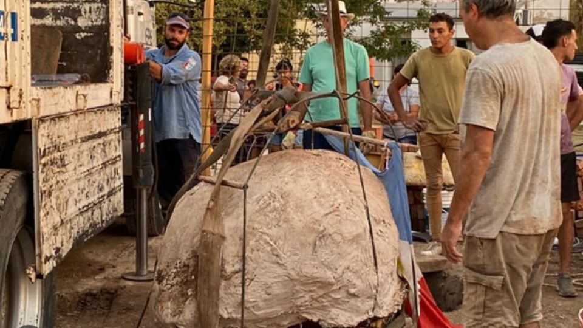

Rescatan huesos de un gliptodonte encontrado en el pozo ciego de una obra en construcción en Santa Fe
Los huesos del animal fueron encontrados a cuatro metros y medio de profundidad en un predio del municipio de Las Petacas, departamento de San Martín, donde se están construyendo ocho viviendas. Todo el pueblo colaborá en su extracción. ¿Cuánto mide, de qué antigüedad data y qué más hallaron?
Un equipo técnico del Patrimonio Arqueológico y Paleontológico dependiente de la Subsecretaria de Gestión Cultural del Ministerio de Cultura de Santa Fe logró extraer los restos fósiles de un gliptodonte que fue encontrado en el municipio de Las Petacas, departamento de San Martín.
Se trata del caparazón de un gliptodonte neoclerocalyptus -el más chico de su especie-, que habitó en la región hace aproximadamente unos 10.000 años, y que fue encontrado por un grupo de albañiles en el fondo de un pozo ciego que estaban haciendo en el marco de un plan de 8 viviendas en el pueblo que tiene poco más de 1.000 habitantes.
Bajamos al pozo que tiene unos 4 metros y medios, fuimos descubriendo todo el caparazón, luego hicimos una bocha de yeso y papel film”, explicó, en diálogo con Radio Rafaela, Luciano Rey, quien estuvo a cargo de la dirección del rescate y de la extracción de los huesos fosilizados del animal.
“Después armamos una cama y con una grúa de la Empresa Provincial de la Energía de Santa Fe (EPE) logramos elevarlo hasta la superficie. y constatamos que se trataba de un gliptodonte cuyo tamaño no era tan grande ya que es apenas un poco más grande que un tacho de 200 litros de aceite”, agregó el paleontólogo.
Además, mientras se encontraban en plena tarea de extraer los restos del gliptodonte a la superficie ayudados por los vecinos del pueblo, los especialistas encontraron huesos de otros animales a su alrededor, de los cuales todavía no han podido determinar a quiénes pertenecieron.
“Encontramos huesos de animales más pequeños alrededor del gliptodonte, algo que no hemos determinado de qué se trata. Al momento de llevar adelante la limpieza, que será en los próximos meses, podremos dilucidar qué es”, concluyó Rey.
Los restos fósiles encontrados restos ya están a disposición de la Comuna local para que defina el destino final que, según trascendió, sería el museo de Las Petacas, ya que, desde que en 2012 en Santa Fe se aplicó la Ley Nacional 25.743 de Patrimonio Arqueológico y Paleontológico, los fósiles no se pueden mueven del lugar en el cual son hallados.